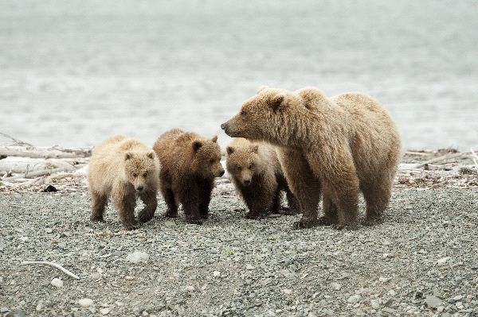
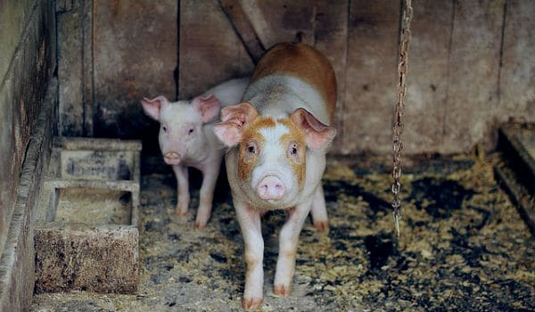
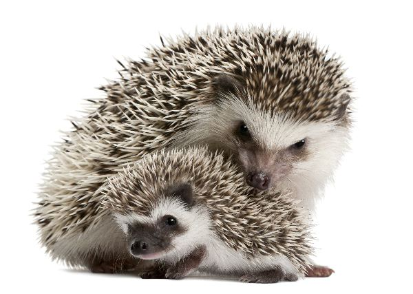

Oso

De acuerdo con la especie, pueden variar en cuanto a tamaño y peso. Un oso polar macho (especie más grande de osos) llega a pesar de 350 a 700 kg, alcanzando una medida de 2.4-3 m. Al caminar apoya toda la planta de los pies, por lo que son animales plantígrados. En cualquier especie de oso, los machos
son más grandes que las hembras.
El oso más pequeño, el Sun Bear de Asia, pesa apenas 27-65 kilos y mide 120-150 metros de largo.Sus orejas, ojos y cola son pequeñas. Están cubiertos por pelaje largo, abundante y áspero que puede ser de color marrón, negro, blanco o con manchas. Sus cuerpos son
muy voluminosos y robustos y están acompañados de extremidades cortas.
A diferencia de otros carnívoros, estos mamíferos poseen dientes adaptados mayormente para una dieta a base de vegetales. La dentadura de los osos polares se ha adaptado a sus necesidades carnívoras.
Tipos
- Oso Asiatico Negro
- Oso Malayo
- Oso Bezudo
- Oso Kodiak
- Oso de Anteojos
- Oso Panda
- Oso Polar (no es omnivoro)
- Oso Pardo
- Oso Negro Americano
- Oso Grizzly
Cerdo

El cerdo (también conocido como cochino, chancho y puerco) es un mamífero y subespecie proveniente de la familia Suidae. Su nombre científico es Sus scrofa domestica, ya que es una variedad domesticada de la especie Sus scrofa (jabalí o cerdo salvaje).
Su origen se atribuye a dos especies de suidos salvajes, una de Europa y otra de Asia; mientras que en el continente americano fue introducido por Cristóbal Colón.
Caracteristicas
- Alimentación: En su estado natural son herbívoros debido al diseño de su mandíbulas, pero en cautiverio se convierten en omnívoros ya que comen todo tipo de alimentos (incluyendo carne).
- Tamaño y peso: Suele alcanzar un peso de entre 100 y 400 kilogramos y una longitud de 2 metros.
- Esperanza de vida: En libertad suelen vivir un período de entre diez y quince años. En cautiverio puede variar considerablemente según el uso u objetivo, pudiendo llegar desde 1 hasta 6 años de vida.
- Madurez sexual: Alcanzan la madurez en diferentes períodos según el género y la especie. Según los estudios, aproximadamente las hembras de 5 a 7 meses y los machos de 6 a 9 meses.
- Reproducción: Es vivíparo, lo que significa que el embrión se desarrolla dentro del vientre de la hembra.
- Comportamiento: los cerdos logran desarrollar estructuras sociales complejas y aprenden entre ellos observándose (similar a los primates). Son capaces de crear lazos de amistad con otros integrantes de su comunidad y entorno (incluyendo seres humanos), razón por la cual también son utilizados como mascotas.
Erizo

El erizo no está emparentado con el puercoespín. Es un pequeño animal cubierto de espinas o púas de queratina huecas, pero el rostro, el cuello y la región ventral tienen pelo en lugar de púas. De acuerdo con la especie puede ser marrón, beige o con un patrón bicolor. Su longitud se encuentra entre 13 y 30 centímetros y su peso oscila entre 397 y 1,106 gramos.
Caracteristicas
- ALIMENTACIÓN: Los insectos constituyen el alimento preferido del erizo y regularmente consume lombrices, escarabajos y ciempiés, pero nunca rechaza otros animales pequeños, como babosas y caracoles. Su dieta no está completa sin pequeños roedores, alacranes, ranas, hongos y hasta raíces, hierba y semillas. Como todo depredador oportunista, en vez de concentrarse en una presa prefiere desplazarse alrededor de su hábitat rebuscando entre el suelo y la hojarasca.
- REPRODUCCIÓN: Sus hábitos solitarios inducen a que el erizo sólo se reúna intencionalmente al momento de aparearse. Los nacimientos se producen una vez por año para la hembra y pese a la variedad de especies, es posible generalizar el período de gestación a un rango de 35-58 días.
- AMENAZAS: El erizo es muy susceptible a ciertas enfermedades relacionadas con la obesidad y los problemas cardiovasculares, especialmente en cautiverio. El cáncer, los tumores y los parásitos afectan de igual manera su vida. En el caso de estos últimos, suelen ser garrapatas que invaden la mayor parte del cuerpo del erizo; un individuo puede estar tan infestado que su vigor se reduce y puede morir por una infección.